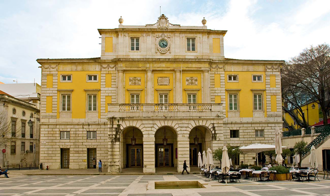
A work trip for the premiere of a staged production of Mozart's Cosi fan tutte (conducted by John Eliot Gardiner) at the Teatro Sao Carlos in Lisbon. I managed the singer who was playing Despina.
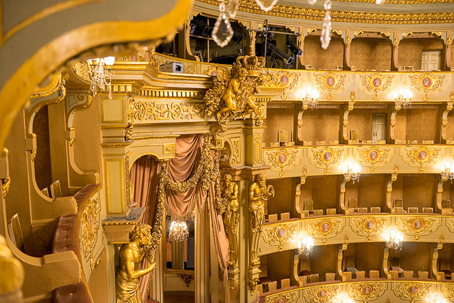
My friend Danny then flew out to meet me as I stayed on for a few days' holiday at the end of the work trip.
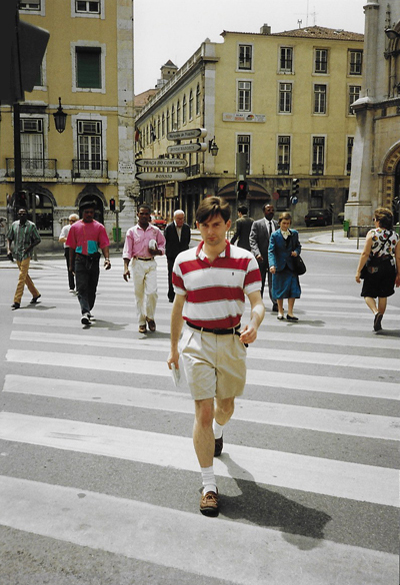
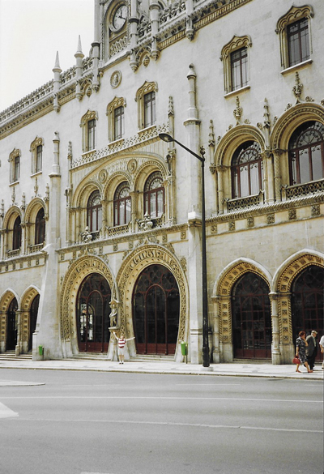
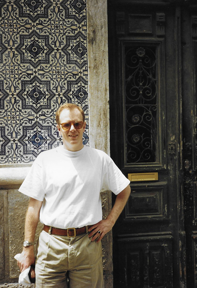
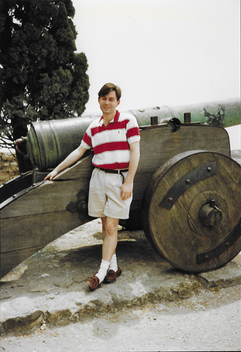
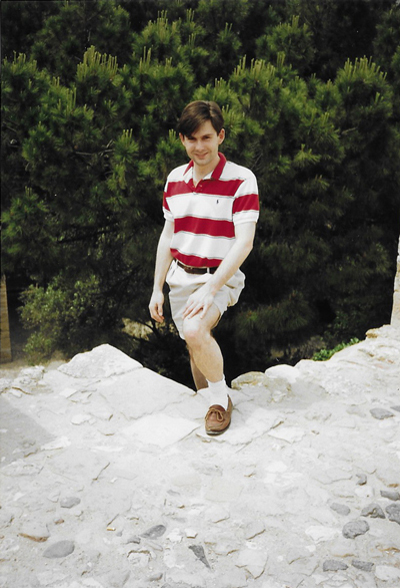
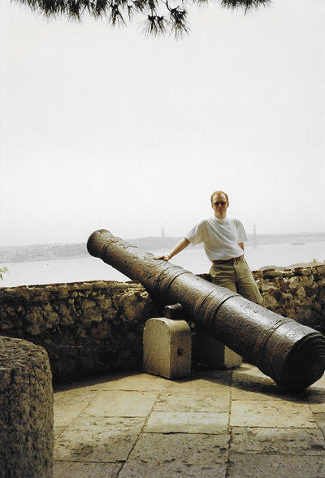
Alfama, the oldest district in Lisbon and crowned with the Castle of St Jorge, is somewhat like a village within a city with labyrinthine streets inaccessible to cars. Great views can be had over the city, including views of the clanky old trams which still run to this day.
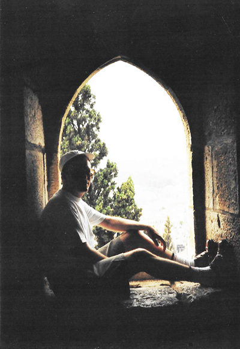
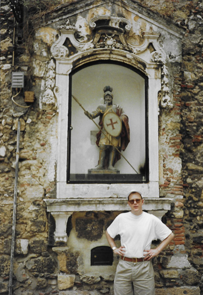
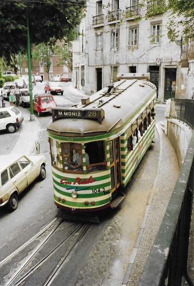
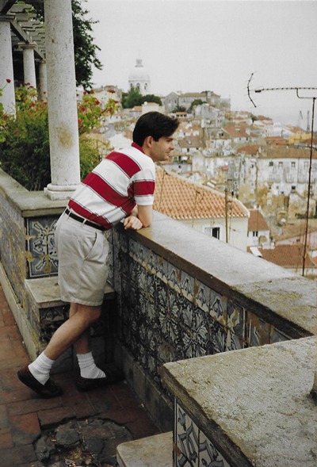
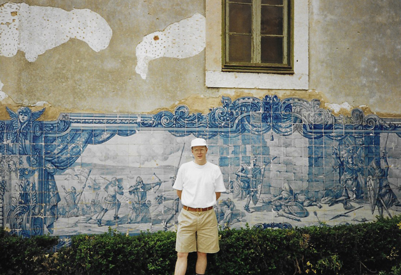
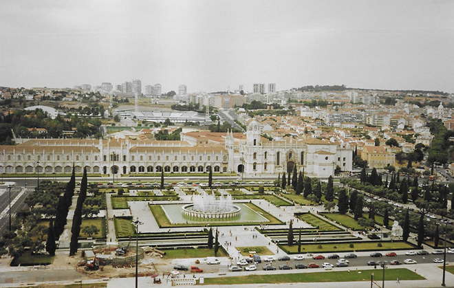
We took a train from the central station out to the Torre de Belém. This ornate and distinctively shaped tower was originally designed in 1514 as a formidable fortress and key to the defence of the estuary mouth. The stonework of the exterior is the major attraction with ornate balconies, Manueline (Portuguese late Gothic) rope shapes, animals and shields. Each corner boasts a sentry post with evident Moorish style and from the inside panoramic views of the river and much of the city can be gained.
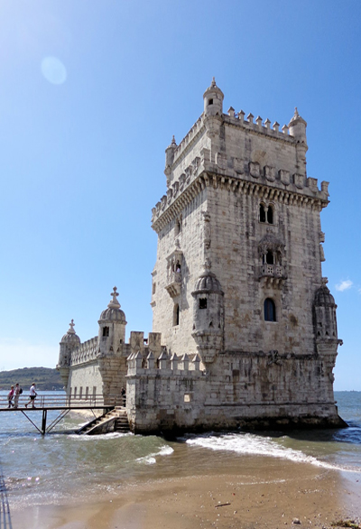
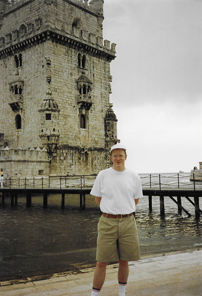
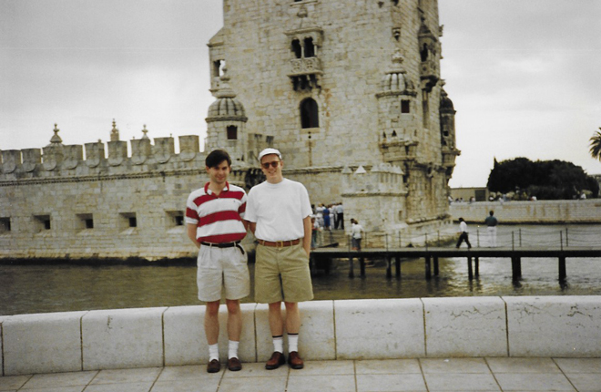